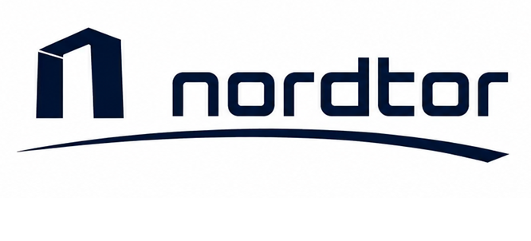

门框象征开放的通道与连接， 代表 nordtor 作为物流枢纽的核心作用。
从门框延伸的弧线路径象征物流流动与前进， 连接世界与未来。
坚实的结构与平衡比例传递可靠、 专业、值得信赖的品牌形象。
面向全球视野与布局， 连接世界，通达未来。
Nordtor is building a modern logistics and global supply chain gateway for the future of international trade.